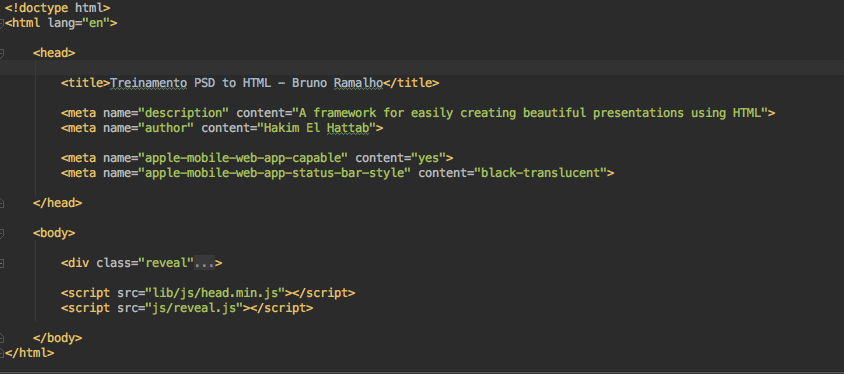

Treinamento
Corte e Montagem
de HTML/CSS
Do PSD ao HTML5
Photoshop, Fireworks, HTML5, Bootstrap,
Fonticons, CSS3, SASS, Gulp e Bower
Tipos de Imagens
Quais os principais formatos e
quais diferenças existem entre eles
Tipos de Imagens
BMP
O formato BMP (ou Bitmap) é o precursor.
Ele armazena fotos e gráficos em pequenos pixels.
Quanto maior o número de pixels em uma imagem, maior a qualidade da imagem.
Tipos de Imagens
BMP

Tipos de Imagens
JPG
A grande característica do JPG é a possibilidade de compressão.
Ele armazena imagens em blocos de pixels, portanto menos informação, menor tamanho.
Tipos de Imagens
JPG

JPG de alta qualidade
Tipos de Imagens
JPG

JPG de média qualidade
Tipos de Imagens
JPG

JPG de baixa qualidade
Tipos de Imagens
GIF
O GIF é ou era muito utilizado, principalmente
para criar imagens animadas.
Seu formato é 8-bit, o que significa que imagens em GIF
possuem apenas 256 cores.
Tipos de Imagens
GIF

Tipos de Imagens
PNG
Ele traz compressão de arquivos sem perder qualidade, e como é 24-bits, um número muito maior de cores está disponível.
Assim como o GIF, suporta imagens com transparência e animações, só que com muito mais qualidade.
Tipos de Imagens
PNG

Tipos de Imagens
SVG
O SVG é um arquivo baseado em texto e descreve
as imagens com formatos vetoriais.
Por ser vetorial, é um ótimo formato para
ser uzado em sites responsivos.
Tipos de Imagens
SVG

Tipos de imagens
Vamos praticar!
Análise de layout
Entender o que é cada parte do layout, assim podemos
cortar e montar corretamente o HTML
Análise de layout
Partes de um layout
- Cabeçalho
- Rodapé
- Conteúdo principal
- Conteúdo secundário
- Listas
- Formulários
- etc...
Análise de layout
Vamos praticar!
Exportar imagens
Vamos praticar!
Por hoje é só...
...veremos amanhã
Boas práticas para HTML
Significado semântico de algumas tags
Análise semântica de um layout
Treinamento
Corte e Montagem
de HTML/CSS
Do PSD ao HTML5
Photoshop, Fireworks, HTML5, Bootstrap,
Fonticons, CSS3, SASS, Gulp e Bower
Boas práticas de HTML5
Como mudanças simples podem dar mais qualidade ao seu código
Boas práticas de HTML5
Como o HTML é interpretado?

Boas práticas de HTML5
Exemplo de código HTML5
Boas práticas de HTML5
Tags mais comuns
<a>, <p>, <span>, <em>, <strong>, <div>, <br><h1>, <h2>, <h3>, <h4>, <h5>, <h6><ul>, <ol>, <li>, <dl>, <dd>, <dt><form>, <input>, <button>, <select>, <textarea><table>, <tr>, <td>, <thead>, <tbody>, <tfoot><header>, <footer>, <nav>, <section>, <article>, <aside>
Semântica do HTML
O que é semântica? Quando sei que
um HTML está semânticamente escrito?
Semântica do HTML
<header>
Usado para cabeçalhos de página e de seção, pode
ser utilizado mais de 1 vez por página
Semântica do HTML
<footer>
Responsável pela marcação de rodapés
de páginas e seções
Semântica do HTML
<nav>
Responsável pela marcação de itens de navegação do site/aplicação
Semântica do HTML
<aside>
Responsável pela marcação de conteúdos secundários a pagáinas ou seções
Semântica do HTML
<article>
Marcação do conteúdo principal daquela página ou seção
Semântica do HTML
<section>
Tag para delimitar semânticamente uma seção de conteúdo
Semântica do HTML
Vamos praticar!
Por hoje é só...
...veremos amanhã
Performance DO HTML5
Treinamento
Corte e Montagem
de HTML/CSS
Do PSD ao HTML5
Dia 4
Photoshop, Fireworks, HTML5, Bootstrap,
Fonticons, CSS3, SASS, Gulp e Bower
Performance
O que pode comprometer a
performance de uma página HTML?
Performance HTML5
O que há de errado nessa imagem?

Performance HTML5
Evite código inline

Performance HTML5
Evite código incorporado

Performance HTML5
Use códigos externos

Por hoje é só...
...veremos segunda
Grid do Bootstrap
Responsividade
Por hoje é só...
...veremos amanhã
Bootstrap Componentes
Fonticons
Mais prática de Bootstrap
Por hoje é só...
...veremos amanhã
CSS3
Regras básicas
Boas práticas
CSS3
Cascading Style Sheets
Cascading Style Sheets (CSS) é uma linguagem de folhas de estilo utilizada para definir a apresentação de documentos escritos em uma linguagem de marcação.
O seu principal benefício é a separação entre o formato e o conteúdo de um documento.
CSS3
Sintaxe
- Regras
- Declarações
- Seletores
- Propriedades
- Valores

CSS3
Pseudo-Classe [:]
Usada para identificar os elementos de marcação ou ações específicas para o qual um bloco de declaração se aplica
:hover
:active
:before
:after
CSS3
Juntando tudo
selector,
selector2:pseudo-class {
property: value;
property2: value2;
}
/* comment */
/* comentário em css, semelhante aos da linguagem c */
body {
font-family: Arial, Verdana, sans-serif;
background-color: #FFF;
margin: 5px 10px;
}
CSS3
Referências
- Maujor - http://www.maujor.com/
- Documentação Oficial W3C - https://www.w3.org/Style/CSS/
- W3 Schools - http://www.w3schools.com/css
- CanIUse - http://caniuse.com/
- W3C CSS Validator - https://jigsaw.w3.org/css-validator/
- CSS Zen Garden - http://www.csszengarden.com/
CSS3
Vamos praticar!
Treinamento
Corte e Montagem
de HTML/CSS
Do PSD ao HTML5
Dia 9
Photoshop, Fireworks, HTML5, Bootstrap,
Fonticons, CSS, SASS, Gulp e Bower
CSS
Fazer um bom código front-end é
mais difícil do que parece.
CSS
Boas Práticas
- Não sobrescreva suas próprias regras CSS
- Abuse de classes pra reaproveitar código CSS
- Não brigue com a especificidade do CSS
- Números mágicos são um mal sinal no CSS
- Use unidades flexíveis
- Evite acoplar o estilo CSS a tags específicas do HTML
- Dê bons nomes pra suas classes
- Documente bem as exceções
- Indentaçao do código
- Ordenação de propriedades
CSS / Boas Práticas
Não sobrescreva regras CSS
Além de escrever a mesma propriedade duas vezes,
você não faz uso dos padrões do navegador.
Evite isso invertendo seus seletores
e os demais herdam o valor padrão.
CSS / Boas Práticas
Não sobrescreva regras CSS
/* desktop */
.botao-magico { float: right; }
/* mobile */
@media (max-width: 600px) {
.botao-magico { float: none; }
}
/* mobile */
/* nada aqui! o padrão é float:none */
/* desktop */
@media (min-width: 600px) {
.botao-magico { float: right; }
}
CSS / Boas Práticas
Abuse de classes
Classes nos permitem o tipo de reaproveitamento que a herança nos traz em linguagens orientadas a objetos
Crie uma hierarquia de classes para reaproveitar
estilos comuns mesmo em elementos diferentes
CSS / Boas Práticas
Abuse de classes
Você tem dois elementos na página .menu e .noticias
que têm funções e visuais diferentes.
<div class="box menu"></div>
<div class="box noticias"></div>
.box {
background: #ccc;
border-radius: 5px;
box-shadow: 2px 2px 2px black;
}
CSS / Boas Práticas
Não brigue com a especificidade
Seletor de ID tem precedência ao de classe, que tem precedência ao de tagname.
Mantenha a especificidade dos seus seletores no mesmo nível usando classes sempre pra estilizar. São mais fáceis de compor.
E jamais use !important pra forçar um estilo.
CSS / Boas Práticas
Não brigue com a especificidade
<div id="algum-id" class="alguma-classe"></div>
<div id="algum-id"></div>
#algum-id { background-color: blue; }
#algum-id.alguma-classe { background-color: red; }
.alguma-classe { background-color: transparent; }
#algum-id .alguma-classe { background-color: yellow; }
CSS / Boas Práticas
Números mágicos são um mal sinal
Toda vez que você escreve um margin-top: 37px ou um width: 381px um bebê foca morre.
Quando você usa margin-top: -1px certamente vai quebrar em algum navegador ou se o ícone mudar. Isso faz seu CSS ser pouco ou quase nada reaproveitável.
Quer alinhar um ícone com texto? Aprenda a usar o vertical-align:middle (mesmo ele não funcionando do jeito que você pensa que funciona).
CSS / Boas Práticas
Use unidades flexíveis
Números mágicos podem ser evitados em muitos casos usando unidades relativas como porcentagens.
Se você tem uma página de 940px de largura e precisa dividir em 5 colunas, não escreva width: 188px porque você nunca vai lembrar da onde saiu esse valor.
Prefira width: 20% que mostra de maneira mais óbvia que é 1/5 do página.
CSS / Boas Práticas
Use unidades flexíveis
E, claro, se puder, faça todas as suas unidades de layout com porcentagens.
A Web é uma mídia elástica e confinar sua página a pixels estáticos é transformar a Web em uma mídia limitada como a impressa.
Para elementos tipográficos ou afetados pela tipografia, use em como medida flexível.
CSS / Boas Práticas
Evite acoplar o estilo a tags
Escrever o nome tag no meio do CSS faz com que seu estilo fique acoplado à estrutura do HTML.
Se o HTML muda, seu estilo quebra.
Se você tem um menu como uma lista cheia de itens, não use .menu li no CSS.
Prefira criar uma classe específica .menu-item e aplicá-la no HTML.
CSS / Boas Práticas
Evite acoplar o estilo a tags
Até quando você usa elementos mais padronizados, como <header> ou <h1>, a boa prática é usar classes pra estilizar
Tudo isso te deixa muito mais livre pra mudar o HTML por razões de semântica e conteúdo, sem afetar o estilo CSS.
CSS / Boas Práticas
Dê bons nomes pra suas classes
E já que boa parte das práticas envolve criar novas classes, a regra óbvia, criar nomes legíveis e fáceis de entender.
Use .painel-principal ao invés de .pnlPri.
Mas não é só isso.
Elas serão escritas no meio do conteúdo HTML da página e, portanto, devem ter semântica de conteúdo e não de visual.
CSS / Boas Práticas
Dê bons nomes pra suas classes
Evite .box-lateral ou .titulo-azul ou .painel-direita. Se o seu box não for lateral ou o título mudar de cor ou o painel mudar de lado, sua classe perde significado.
Prefira usar .painel ou .chamada-principal. E, claro, se, eventualmente, você tiver um .titulo-azul no seu código, não deixe a classe com esse nome o dia que a cor mudar pra vermelho; renomeie a classe!
CSS / Boas Práticas
Documente bem as exceções
Toda regra tem exceções. Às vezes, você vai colocar um ID ou tagname no seu CSS. Ou vai precisar de um !important num raro lugar. Ou aquele número mágico que você não vai lembrar depois como calcula.
Isso deve ser exceção, não abuse. E, sempre que fizer isso, documente direito no CSS o porquê daquela escolha.
/* estrutura esperada para o menu:
<ul class="menu">
<li><a href=""></a>
<li><a href=""></a>
</ul>
*/
.menu { ... }
.menu li { ... }
.menu a { ... }
/* usando ID porque o widget do facebook obriga */
#facebook-like iframe {
width: 100% !important; /* important pra sobrescrever css inline do widget */
}
CSS / Boas Práticas
Indentação do código
Código bem indentado facilita o entendimento e legibilidade, ajudando assim o desenvolvimento, mais principalmente a manutenção
Se tiver mais de uma pessoa mechendo no mesmo arquivo, padronize a identação dos editores, caso sejam diferentes
CSS / Boas Práticas
Ordem das declarações
Não é obrigatório, mas se puder fazer é bom. Declarações relacionadas devem ser agrupadas segundo a seguinte ordem
- Posicionamento
- Box model
- Tipografia
- Visual
Posicionamento vem primeiro por que isto pode remover um elemento do fluxo normal do documento e substituir estilos relacionados. O box model vem depois pois ele dita as dimensões e lugar do componente.
Tudo o mais que toma lugar dentro do componente ou não impacta as duas seções anteriores, vem por último.
CSS3
Vamos praticar!
Treinamento
Corte e Montagem
de HTML/CSS
Do PSD ao HTML5
Photoshop, Fireworks, HTML5, Bootstrap,
Fonticons, CSS, SASS, Gulp e
Bower
SASS
Pré-processador de CSS.
SASS
O que é?
Sass permite usar recursos que não existem em CSS, como variáveis, aninhamento, mixins(funções), herança e outras guloseimas.
Depende de um compilador para entregar um CSS.
SASS
Variáveis
Uma maneira de armazenar informações que você deseja reutilizar.
Cores, Fonte, Dimensões, sombras ou qualquer valor CSS você acha que vai querer reutilizar.
SASS
Variáveis
$font-stack: Helvetica, sans-serif;
$primary-color: #333;
body {
font: 100% $font-stack;
color: $primary-color;
}
body {
font: 100% Helvetica, sans-serif;
color: #333;
}
SASS
Aninhamento
O CSS não permite aninhar regras.
No SASS podemos aninhar as regras criando assim uma melhor organização.
SASS
Aninhamento
nav {
ul {
margin: 0;
padding: 0;
list-style: none;
}
li {
display: inline-block;
}
a {
display: block;
padding: 6px 12px;
text-decoration: none;
}
}
SASS
Aninhamento
nav ul {
margin: 0;
padding: 0;
list-style: none;
}
nav li {
display: inline-block;
}
nav a {
display: block;
padding: 6px 12px;
text-decoration: none;
}
SASS
Fragmentos / Import
No SASS também podemos fragmentar nossos arquivos, separando por funcionalidade e/ou páginas.
SASS
Fragmentos / Import
// _reset.scss
html,
body,
ul,
ol {
margin: 0;
padding: 0;
}
// base.scss
@import 'reset';
body {
font: 100% Helvetica, sans-serif;
background-color: #efefef;
}
SASS
Fragmentos / Import
html, body, ul, ol {
margin: 0;
padding: 0;
}
body {
font: 100% Helvetica, sans-serif;
background-color: #efefef;
}
SASS
Extend / Estender regras
Você pode aplicar uma regra diversas vezes em vários lugares diferentes.
SASS
Extend / Estender regras
.message {
border: 1px solid #ccc;
padding: 10px;
color: #333;
}
.success {
@extend .message;
border-color: green;
}
.error {
@extend .message;
border-color: red;
}
.warning {
@extend .message;
border-color: yellow;
}
SASS
Extend / Estender regras
.message, .success, .error, .warning {
border: 1px solid #cccccc;
padding: 10px;
color: #333;
}
.success {
border-color: green;
}
.error {
border-color: red;
}
.warning {
border-color: yellow;
}
SASS
Mixins / Funções
Semelhante ao Extend, você pode incorporar um código dentro de outro, só que passando valores variáveis.
SASS
Mixins / Funções
@mixin border-radius($radius) {
-webkit-border-radius: $radius;
-moz-border-radius: $radius;
-ms-border-radius: $radius;
border-radius: $radius;
}
.box {
@include border-radius(10px);
}
SASS
Mixins / Funções
.box {
-webkit-border-radius: 10px;
-moz-border-radius: 10px;
-ms-border-radius: 10px;
border-radius: 10px;
}
SASS
Operadores
Você também pode trabalhar com operações matemáticas, no SASS.
SASS
Operadores
.container { width: 100%; }
article[role="main"] {
float: left;
width: 600px / 960px * 100%;
}
aside[role="complementary"] {
float: right;
width: 300px / 960px * 100%;
}
SASS
Operadores
.container {
width: 100%;
}
article[role="main"] {
float: left;
width: 62.5%;
}
aside[role="complementary"] {
float: right;
width: 31.25%;
}
Treinamento
Corte e Montagem
de HTML/CSS
Do PSD ao HTML5
Photoshop, Fireworks, HTML5, Bootstrap,
Fonticons, CSS, SASS, Gulp e
Bower
Gulp
Task Runner
Gulp é uma ferramenta de streaming de construção rápida construído em Node.js.
Gulp
Algumas funcionalidades
- Compila CoffeeScript
- Compila Templates
- Compila SASS/LESS
- LiveReload
- Monta um servidor estático
- Relatório Erros na execução das tasks
- Processamento de imagem
- ...
- ...
- ...
Gulp
Como acontece a mágica?
Para toda essa mágica acontecer dependemos do NodeJS e do NPM.
Gulp
NodeJS
Para quem não sabe NodeJS, ajudou a difundir ainda mais o Javascript, permitindo transforma-lo em Server-Side.
Gulp
NPM
É um sistema de gerenciamento de pacotes, para o NodeJS, ele é um completo repositório online de ferramentas que acrescentam poder ao NodeJS.
Gulp
Como iniciar?
Para começarmos a usar precisamos, óbviamente, instalar o NodeJS.
$ npm initpackage.jsonGulp
Como iniciar?
Depois... criamos o arquivo do gulp que define as tasks a serem executadas.
gulpfile.jsBower
Sistema de gerenciamento de dependências
Como o NPM, o Bower possui um repositório de dependencias para aplicações Front.
Bower
Como acontece a mágica?
Bower
Como iniciar?
Para usarmos, óbviamente, ter o NodeJS instalado.
$ bower initbower.jsonBower
Como iniciar?
Depois... basta adicionarmos nossas dependências no arquivo e elas serão gerenciadas automaticamente